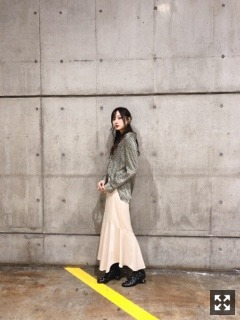

この場所にたくさんの愛を残せたら
寒くなって嬉しい反面
例年と比べると暖かいように感じています。
マフラーをして鼻真っ赤にして
手がかじかんで指が動かなくなるような寒さが待ち遠しくてたまりません。
今年のコート、迷いに迷っています。
黒がやはり使いやすいかな〜と思いつつ
毎年黒だな〜ってことに気づき
ブラウンやグレーにも惹かれている、、
足首まであるロングコートが欲しいのだけど
私の身長だと探すのが大変です、、
やっぱり秋冬の服が一番好きです☀︎
さて、だいぶお待たせしてしまいましたが
握手会で頂いたお花たちです！！
上半分が１０／２２
仙台個別握手会で頂いたもの、
下半分が１０／２０全握で頂いたもの❁︎
見にくくて大変申し訳ないです、、
たくさんありがとうございます(；；)
そしてこちらがつい先日９日の
幕張個握にて頂いたもの❁︎
素敵なものばかりで嬉しいです。
１部の私服しか撮れなかったのですが
こんな感じでした〜

わたし的すごくお気に入りなお洋服です〜
テロテロ素材が楽ちんで
ものすごく好きです〜！！着やすい！
ゆるっとしたシルエットが好み。
今月は毎週握手会がありますね！
お越しくださる方は楽しみましょう〜〜
最近は映画の撮影と並行して
リハーサルをしています！
とにかくかっこよく踊るには
数をこなして練習あるのみなので。
隙間時間ができては、
体が勝手に動いてしまいます（笑）
歩いてても手が勝手に動いてしまう（笑）
振り入れをしてから身体が慣れるまで時間がかかるので必死です。かっこよく踊るぞ〜！！
中々リハーサルに参加できない中、
色んな人に助けて頂いています。感謝。
人に頼るのは苦手ですが
みんなを見ていると私自身のモチベーションにも繋がるし、やはり同期は偉大です！
４期生のみんなとも
もっとたくさんコミュニケーションを取って
本番一緒に楽しめたらいいなあ☀︎
楽しみにしていてくださいね！
今年の紅白歌合戦、
乃木坂46の出演が決定しました。
ありがとうございます！
２０１９年をあの場で締めくくれること
とても嬉しく有難く思います。
今年の集大成のパフォーマンスをお見せできるよう、みんなで笑顔で楽しんで踊れますように☀︎
そして、「Sing Out!」が
日本レコード大賞 優秀作品賞にノミネートされました！
日頃から応援して下さる全ての皆様に感謝しています。
一昨年はテレビの前。
去年はステージで感じたあの感動は
私の人生の中でとても大きなものになりました。
あの瞬間は一生忘れないだろうなあ。
このグループにいられて本当に幸せです。
年末はテレビの前で、
私たちの姿をみていてください！！
どっちが年上か分からない。
私は年下だと思って接している。
赤ちゃんみたいなあやちゃんです。
舞台お疲れ様！
行けなかったのが本当に悔しいです。
明日は大阪にて個別握手会です！
素敵な時間になるよう
笑顔いっぱいお待ちしております。
楽しもうね☀︎
では。
人の優しさに触れる度に
心が痛く熱くなりますね( .. )
たくさんの方の支えに感謝しています。
色んな場所で恩返しが出来ますように
Original：https://www.nogizaka46.com/s/n46/diary/detail/53601?ima=4941&cd=MEMBER